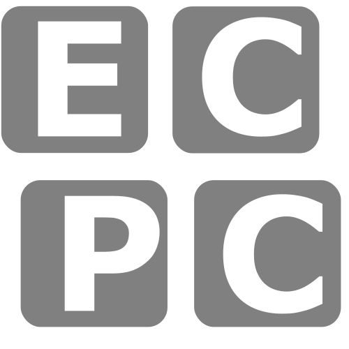

Communicatie met een meetinstrument¶
Het hart van ieder experiment wordt gevormd door de metingen die worden uitgevoerd. Meetinstrumenten vervullen daarom een belangrijke rol bij het automatiseren van een experiment. De eerste stap die je zult zetten tijdens het ontwikkelen van een applicatie is het communiceren met het meetinstrument. We hebben gekozen voor een Arduino Nano 33 IoT,10 een zeer compact stukje elektronica rondom een ARM-microcontroller. Naast het uitvoeren van analoge spanningsmetingen kan dit model ook analoge spanningen afgeven dat voor het experiment heel nuttig gaat blijken te zijn. We hebben — speciaal voor deze cursus — een stukje firmware1 ontwikkeld.11
Microcontrollers¶
Computers — zoals de meesten van ons die kennen — zijn zeer krachtig en ontworpen om zo flexibel mogelijk te zijn. Ze draaien games, e-mail of rekenen klimaatmodellen door. Ze komen in veel vormen: desktops, laptops, tablets en telefoons
. Ze bevatten veel losse componenten: snelle processor (CPU), veel geheugen (RAM), veel permanente opslag (SSD), complexe interfaces (HDMI, USB) en een besturingssysteem waarmee je verschillende programma's kunt opstarten en de computer kunt beheren. Computers zijn behoorlijk prijzig.
Een microcontroller daarentegen is veel eenvoudiger. Ze zijn ontworpen voor een beperkte en specifieke taak. Ze hebben veel verschijningsvormen — de meeste onherkenbaar. Je vindt microcontrollers in de vaatwasser, de magnetron, een draadloos toetsenbord en auto's (letterlijk tientallen verspreid over de hele auto). Ze hebben dan een beperkte taak: ze reageren op de knopjes op je dashboard om het klimaat te regelen of een raam te openen en ze sturen de kleppen in een verbrandingsmotor aan. Microcontrollers bevatten CPU, RAM en SSD
vaak in één chip en hebben beperkte interfaces (vaak letterlijk losse pinnetjes die je moet verbinden). De CPU is relatief gezien traag en de hoeveelheid geheugen klein. Voor de beperkte taak is dat niet erg. Een besturingssysteem is niet nodig: als je hem aanzet draait hij meteen het enige programma dat ooit ingeladen is (dit heet dan firmware). Microcontrollers zijn goedkoop en daarom ook uitermate geschikt voor hobbyprojecten.
Een Arduino is zo'n microcontroller. Vaak wordt een Arduino vergeleken met een Raspberry Pi — een andere goedkope computer. Maar een Raspberry Pi is écht een computer (en daarmee ook complex). Daarmee is een Raspberry Pi veel veelzijdiger, maar ook duurder en is het complexer om een eenvoudig programma te draaien. Apparatuur zoals frequentiegeneratoren en oscilloscopen hebben vaak een microcontroller ingebouwd, maar soms ook een microcomputer analoog aan een Raspberry Pi. Dat maakt voor ons weinig verschil zolang we maar weten hoe we het instrument kunnen aansturen.
Communicatieprotocol¶
Hoe praat je eigenlijk met hardware? Voor fabrikanten zijn er een paar opties:
- Je maakt gebruik van een al bestaand protocol (een bestaande standaard) en je schrijft vervolgens documentatie specifiek voor jouw instrument (bijvoorbeeld de VISA-standaard12, onder andere gebruikt door Tektronix digitale oscilloscopen13).
- Je schrijft een proprietary2 protocol en een bijbehorende bibliotheek die softwareontwikkelaars moeten gebruiken.3 Voorbeelden zijn instrumenten van National Instruments14 of de PicoScope digitale oscilloscopen4 15.
De VISA-standaard is veelgebruikt, maar helaas komen proprietary protocollen veel voor. Dat is jammer, want in het laatste geval moet je het doen met de software die geleverd wordt door de fabrikant. Als die jouw besturingssysteem of jouw favoriete programmeertaal niet ondersteunt, heb je simpelweg pech.
Wij gaan gebruik maken van de VISA-standaard. VISA staat voor Virtual Instrument Software Architecture en is héél breed en definieert ook protocollen om te communiceren via allerlei verouderde computerpoorten en kabels. Hieronder zie je een voorbeeld van verschillende poorten zoals RS232 en GPIB aan de achterkant van een Tektronix TDS210 oscilloscoop. De VISA-standaard communiceert gelukkig ook via internet en USB, waarvan wij gebruik zullen maken.
 Bron: Wikimedia Commons.
Bron: Wikimedia Commons.
{kind=link}
Onderdeel van VISA is de SCPI standaard 16, wat staat voor Standard Commands for Programmable Instruments. Dit onderdeel definieert een bepaald formaat voor commando's die we naar ons instrument zullen sturen. De lijst met commando's die door de firmware van onze Arduino worden ondersteund is gegeven in de appendix.
Eerste stappen¶
Waarschuwing
Let op dat je de weerstand van 220 Ω gebruikt! Een te grote weerstand zorgt ervoor dat je nauwelijks iets kunt meten, maar een te kleine weerstand zorgt ervoor dat de stroomsterkte door de Arduino te groot wordt. In dat geval zul je de Arduino onherstelbaar beschadigen. De kleurcodes voor weerstanden vind je in de appendix.
Schakeling bouwen
Je maakt een schakeling om de spanning over en de stroom door een LED te meten. Hiervoor maak je gebruik van een Arduino en een breadboard. Om de stroomsterkte te beperken zet je de LED in serie met een weerstand van 220 Ω. Je sluit twee spanningsmeters aan. Spanningsmeter 1 staat over de LED en de weerstand samen. Spanningsmeter 2 staat alleen over de weerstand.
Theoretische schakeling
Het circuit zoals je dat zou bouwen met twee losse voltmeters is hieronder weergegeven. De subscripts 0, 1 en 2 bij $U_0$, $U_1$ en $U_2$ verwijzen naar de kanalen waarmee de Arduino spanningen kan sturen of uitlezen. Deze kanalen worden in de volgende opgaves belangrijk.
Praktische schakeling
In het 3D-model5 hieronder is een Arduino Nano 33 IoT op een 400-punt breadboard geschakeld met een LED en een weerstand van 220 Ω. In een breadboard zijn in iedere rij alle kolommen A t/m E met elkaar verbonden (zo ook kolommen F t/m J). Draadjes en/of componenten die naast elkaar zijn geprikt zijn dus met elkaar verbonden. De Arduino is geprikt in kolom D t/m H en van rij 1 t/m 15. De pin van de Arduino in rij 4 is verbonden middels het rode draadje met het pootje van de LED (de kleur van de draden is niet belangrijk, kies daarom altijd draden met een handige lengte). De platte zijde in de onderste ring van de LED wordt richting aarde geschakeld. Het ander pootje van de LED is verbonden met de weerstand. De kleurcodes voor weerstanden vind je in de appendix. Van de weerstand loopt een draadje naar de aarde van de Arduino (rij 12, kolom H). Met dit deel van de schakeling kan de Arduino een variabele spanning zetten over de LED en de weerstand.
De pin van de Arduino in rij 5 is verbonden met de LED en meet de spanning over de LED en de weerstand. De pin van de Arduino in rij 6 is verbonden met de weerstand en meet alleen de spanning over weerstand.
Besturing 3D-model
Door de linkermuisknop ingedrukt te houden en te slepen kan je het 3D-model draaien. Met de rechtermuisknop kan je het model verplaatsen en door te scrollen kan je in- en uitzoomen.
Checkpunten
- Je hebt een weerstand van 220 Ω gebruikt.
- De platte kant in de dikkere ring onderaan de plastic behuizing van de LED staat richting de aarde geschakeld. Als de pootjes van de LED niet afgeknipt zijn, dan zit het korte pootje aan de platte zijde van de LED.
- De andere kant van de LED is met een draadje verbonden met rij 4.
- Er loopt een draadje van rij 5 naar de LED.
- Er loopt een draadje van rij 6 naar de weerstand.
- Er loopt een draadje van de andere kant van de weerstand naar rij 12 (naar het pinnetje met bovenop een wit vlakje).
Projecttraject
- Schakeling bouwen
- PyVISA in terminal
- PyVISA commando's
listenopen - PyVISA commando
query - Terminator characters demo
- PyVISA regeleindes
- PyVISA LED laten branden
Info
Voor de volgende opdrachten moet je uv geïnstalleerd hebben. Hieronder staat het benodigde commando voor verschillende besturingssystemen. Kies het commando dat voor jou van toepassing is. Open een terminal en type het commando in (of kopieer door te klikken op het -icoon).
Belangrijk: uv werkt nu alleen in nieuw geopende terminals. Sluit daarom de terminal die je open hebt staan en open een nieuwe terminal.PyVISA in terminal
Je sluit de Arduino met een USB-kabel aan op de computer. In een terminal open je een pyvisa-shell met een python backend. Het commando hiervoor is:
pyvisa-shell werkt type je het commando help. Je ziet een reeks aan commando's en bekijkt de helptekst van de commando's waarmee je denkt de pyvisa-shell te kunnen afsluiten. Wanneer je dit commando hebt gevonden sluit je daarmee de pyvisa-shell af.
Pseudo-code
# open pyvisa-shell with python backend
# check help of pyvisa-shell
# check help of exit command
# shut down the pyvisa-shell
> uvx --from pyvisa --with pyvisa-py --with pyserial pyvisa-shell --backend py
Welcome to the VISA shell. Type help or ? to list commands.
(visa)
(visa) help
Documented commands (type help <topic>):
========================================
EOF attr close exit help list open query read termchar timeout write
Checkpunten
- Na het openen van een
pyvisa-shellstaat er op een nieuwe regel(visa). - Als je
helpintypt verschijnt er een heel rijtje met commando's. - Als je
help exitintypt krijg je de hulpvaardige tekst:Exit the shell session. - Als je de
pyvisa-shellmet een commando afsluit staat daarna de naam (visa) niet meer op de laatste regel.
Projecttraject
- Schakeling bouwen
- PyVISA in terminal
- PyVISA commando's
listenopen - PyVISA commando
query - Terminator characters demo
- PyVISA regeleindes
- PyVISA LED laten branden
Info
Je gebruikt uvx om Python packages te draaien zonder ze te installeren. Je start pyvisa-shell, die afkomstig is uit het package pyvisa (--from pyvisa). Je maakt hier gebruik van de optie --backend py, wat staat voor gebruik backend: python. Het kan namelijk dat er naast pyvisa-py ook andere backends, of drivers, geïnstalleerd staan op het systeem die de VISA-communicatie kunnen verzorgen. Als je bijvoorbeeld LabVIEW geïnstalleerd hebt, dan heb je de drivers van National Instruments. De verschillende backends geven de aangesloten apparaten andere namen. Ook ondersteunen niet alle drivers alle type apparaten en moet je ze apart downloaden en installeren. Daarom maken we liever gebruik van de beschikbare Python drivers. Je moet dan wel meegeven dat je dat package ook nodig hebt (--with pyvisa-py) en omdat de Arduino is aangesloten op een seriële kabel6 heb je ook de PySerial package nodig (--with pyserial). Voluit wordt dan dus:
PyVISA commando's list en open
Je bekijkt het lijstje met aangesloten apparaten door in de pyvisa-shell het commando list te typen. Je haalt de USB-kabel waarmee de Arduino aan de computer is aangesloten uit de computer en vraagt nogmaals de lijst met aangesloten apparaten op. Nu weet je welke poort de Arduino is. Je bekijkt daarna de helptekst van het commando open, waarna je de communicatie met de Arduino opent.
Pseudo-code
# open pyvisa-shell with python backend
# check list of connected devices
# check help of open command
# open Arduino
(visa) list
( 0) ASRL3::INSTR
( 1) ASRL5::INSTR
( 2) ASRL28::INSTR
(visa) help open
Open resource by number, resource name or alias: open 3
Checkpunten
- Na het commando
listverschijnt er een lijst met een of meerdere apparaten. - Als de Arduino niet op de computer is aangesloten is er een apparaat uit het lijstje verdwenen.
- Als je de Arduino opent verschijnt de tekst:
ASRL?::INSTR has been opened.
You can talk to the device using "write", "read" or "query".
The default end of message is added to each message.
Projecttraject
- Schakeling bouwen
- PyVISA in terminal
- PyVISA commando's
listenopen - PyVISA commando
query - Terminator characters demo
- PyVISA regeleindes
- PyVISA LED laten branden
PyVISA commando query
Je stuurt een commando naar de Arduino met query COMMANDO. In de documentatie van de firmware heb je het commando opgezocht om de identificatiestring uit te lezen. Nadat je dit commando naar de Arduino stuurt krijg je een error. Je leest rustig verder in het hoofdstuk om erachter te komen hoe je dit moet oplossen.
Pseudo-code
Testcode(open) query gappie
Response: ERROR: UNKNOWN COMMAND gappie
Checkpunten
- Je hebt het woord
querygoed geschreven en met kleine letters. - Na het commando
queryvolgt een spatie. - Na de spatie staat het volledige commando om de identificatiestring uit te lezen, in hoofdletters (dus met
*en?, want deze horen er ook bij!). - Als je het commando verstuurt, verschijnt er de error:
Projecttraject
- Schakeling bouwen
- PyVISA in terminal
- PyVISA commando's
listenopen - PyVISA commando
query - Terminator characters demo
- PyVISA regeleindes
- PyVISA LED laten branden
Een error, niet helemaal wat je had gehoopt! Als je goed kijkt in de documentatie van de firmware dan zie je dat er bepaalde terminator characters (regeleindes) nodig zijn. Dit zijn karakters die gebruikt worden om het einde van een commando te markeren. Het is, zogezegd, een enter
aan het eind van een zin. Dit mag je heel letterlijk nemen. Oude printers voor computeruitvoer gebruikten een carriage return (CR) om de wagen met papier (typemachine) of de printerkop weer aan het begin van een regel te plaatsen en een line feed (LF) om het papier een regel verder te schuiven. Nog steeds is het zo dat in tekstbestanden deze karakters gebruikt worden om een nieuwe regel aan te geven.
Carriage return line feed: typewriter demonstration
Jammer maar helaas, verschillende besturingssystemen hebben verschillende conventies. Windows gebruikt nog steeds allebei: een combinatie van carriage return + line feed (CRLF). Maar MacOS/Linux/Unix gebruiken enkel een line feed (LF), want hoeveel meer heb je nodig? Af en toe is dat lastig, vooral wanneer er elektronica in het spel is want dan willen de regeleindes voor schrijven en lezen nog wel eens verschillend zijn.7
Terminator characters demo
Je vraagt je misschien af wat het betekent dat er bij het schrijven en lezen regeleindes gebruikt worden. Daarom open je de Termination Character Demo door een nieuwe terminal te starten en in te typen:
Je gaat naar de Basic tab, daar zie je inputvelden voor de client (dat ben jij) en de server (dat is de Arduino).Je schrijft een commando measure_voltage naar de Arduino (druk op Write). In het Input veld van de Arduino verschijnt jouw commando, maar het staat nog niet in de Application Log van de Arduino. Het commando is dus nog niet door de Arduino verwerkt. Dit komt doordat de Read Termination Characters van de Arduino \n(LF) zijn, die gaat dus pas lezen als die tekens zijn verstuurd. Je verstuurt \n en ziet dat het commando wordt verwerkt en je een antwoord krijgt.
Steeds \n handmatig versturen is onhandig daarom voer je bij de Client als Write Termination Characters \n in. Je verstuurt nog een commando measure_current, drukt op Write en ziet dat het bericht direct door de Arduino wordt verwerkt en dat je een antwoord krijgt.
In het Input veld van de Client staan twee antwoorden van de Arduino, als je nu op Read drukt blijven de termination characters in de antwoorden staan en moet je ze handmatig uit elkaar gaan halen. Dat is niet handig, daarom vul je bij de Read Termination Characters van de Client \r\n(CRLF) in. Daarna druk je op Read en merk je dat de twee antwoorden apart uitgelezen worden, super handig!
Checkpunten
- De Client Write Termination Characters is ingesteld op
\n. - De Client Read Termination Characters is ingesteld op
\r\n. - Bij het versturen van een bericht naar de server wordt deze verwerkt en krijgt de client een antwoord terug.
- Bij het lezen van het antwoord door de client komen geen termination characters in de Application Log te staan.
Projecttraject
- Schakeling bouwen
- PyVISA in terminal
- PyVISA commando's
listenopen - PyVISA commando
query - Terminator characters demo
- PyVISA regeleindes
- PyVISA LED laten branden
Terminator characters demo: input buffer en timeout
Ga opnieuw naar de Termination Character Demo en lees de laatste stappen van de Introduction tab. Open de Advanced tab en voer de stappen uit.
 Je gaat nu de regeleindes instellen in PyVISA:
PyVISA regeleindes
Je gaat weer terug naar de terminal, en opent een pyvisa-shell. Je gebruikt het commando termchar om de regeleindes in te stellen. Om erachter te komen hoe je deze moet instellen vraag je de helptekst op met help termchar. Je vraagt eerst de huidige instellingen van de regeleindes op en ziet dat deze niet goed staan. Daarna stel je de read in op CRLF en de write op LF. Je bekijkt nog een keer de instellingen om te controleren of de regeleindes nu wel goed staan. Je gaat terug naar de opdracht PyVISA commando query en krijgt een response in plaats van een error.
\r\n en CRLF
Bij de Termination characters demo maakte je gebruik van \r\n, dat is de programmeertaal equivalent van CRLF.
Pseudo-code
# get help of termchar command
# check current termchar settings
# adjust termchar settings in read = CRLF and write = LF
# check new termchar settings
# send query to get identification string
(open) help termchar
Get or set termination character for resource in use.
<termchar> can be one of: CR, LF, CRLF, NUL or None.
None is used to disable termination character
Get termination character:
termchar
Set termination character read or read+write:
termchar <termchar> [<termchar>]
Checkpunten
- De regeleindes zijn ingesteld met het commando
termchar. Na dit commando volgt een spatie. Daarachter volgen de karakters voor de read termchar, opnieuw gevolgd door een spatie met daarachter de karakters voor de write termchar. - De read regeleinde staat ingesteld op CRLF.
- De write regeleind staat ingesteld op LF.
- Als je met het commando
termcharde instellingen van de regeleindes opvraagt, staat er: - Als je het commando
queryverstuurt om de identificatiestring uit te lezen, verschijnt er:
Projecttraject
- Schakeling bouwen
- PyVISA in terminal
- PyVISA commando's
listenopen - PyVISA commando
query - Terminator characters demo
- PyVISA regeleindes
- PyVISA LED laten branden
Onzichtbare regeleindes
Omdat de Arduino nu weet wanneer het commando voorbij is (door de LF aan het eind van de zin
), krijg je antwoord! Dat antwoord heeft dan juist weer een CRLF aan het einde, dus pyvisa-shell weet wanneer het kan stoppen met luisteren en print het antwoord op het scherm. De karakters CRLF en LF zelf blijven onzichtbaar voor ons.
PyVISA LED laten branden
Je zoekt in de documentatie van de firmware op hoe je een spanning op het uitvoerkanaal zet. Je leest dat er een maximale waarde is voor de spanning en zet deze waarde op het uitvoerkanaal. Je ziet dat de LED brandt en er verschijnt een glimlach op je gezicht.
Je bent benieuwd naar wat er gebeurt als je over de maximale spanning heen gaat en zet de maximale waarde + 1 op het uitvoerkanaal. Je denkt na over een verklaring voor wat je ziet gebeuren.
Je weet dat een LED een drempelspanning nodig heeft om te branden. Je vult een paar waardes in tussen de minimale en maximale waarde om erachter te komen wat deze drempelspanning is.
Checkpunten
- Je stuurt een commando naar de Arduino met behulp van het commando
query. - Je hebt woord
querygoed geschreven en met kleine letters. - Je hebt het commando om een spanning op het uitvoerkanaal te zetten geschreven met hoofdletters.
- Je zet een spanning op uitvoerkanaal
0. - Achter het kanaalnummer staat een spatie.
- Na de spatie staat een geheel getal tussen 0 en 1023.
- Als je de waarde 828 naar uitvoerkanaal 0 stuurt gaat de LED branden.
Projecttraject
- Schakeling bouwen
- PyVISA in terminal
- PyVISA commando's
listenopen - PyVISA commando
query - Terminator characters demo
- PyVISA regeleindes
- PyVISA LED laten branden
Een eenvoudig script¶
Je hebt via de shell contact gelegd met de hardware. Nu wordt het tijd om, met de documentatie17 in de aanslag, hetzelfde vanuit Python te doen. Als je met een nieuw project begint is het helemaal geen gek idee om een kort script te schrijven waarin je wat dingen uitprobeert. Als alles lijkt te werken kun je het netjes gaan maken en gaan uitbreiden. We beginnen hier met een eenvoudig script en zullen dat daarna gaan verfijnen.
We lopen het voorbeeldscript eerst regel voor regel door en geven het volledige script aan het eind. Je hoeft nu dus alleen maar te lezen en nog geen code uit te voeren. Allereerst importeer je de pyvisa-bibliotheek met:
"\r\n") en bij het schrijven (LF, "\n"):
Tenslotte stuur je een query naar de Arduino:
Het volledige script — met een paar print-statements — ziet er dan als volgt uit (bekijk de code, druk op de runknop linksboven de code, maar type het nog niet in):
import pyvisa
rm = pyvisa.ResourceManager("@py")
ports = rm.list_resources()
print(ports)
device = rm.open_resource(
"ASRL28::INSTR", read_termination="\r\n", write_termination="\n"
)
identification = device.query("*IDN?")
print(identification)
(ECPC) > python test_arduino.py
('ASRL28::INSTR',)
Arduino VISA firmware v1.1.0
De output van het script is afhankelijk van het systeem en het aantal apparaten dat verbonden is.
Vergelijk script met pyvisa-shell
Met bovenstaande code heb je precies hetzelfde gedaan in Python als in de pyvisa-shell. Vergelijk de verschillende stappen hieronder met elkaar door met de muis over de tekst heen te gaan.
Projecttraject
- Vergelijk script met
pyvisa-shell - Pythonscript aanmaken
- Virtual environment aanmaken
- PyVISA in Pythonscript
- LED laten branden
- flashingLED
- Account aanmaken
- GitHub Desktop installeren
- Van bestaande map repository maken
- Commit
- Push en pull
Pythonscript aanmaken
ECPC en maak je een bestand test_arduino.py aan. Je kopieert de gegeven Pythoncode in dit bestand. Je ziet dat Visual Studio Code rechtsonder aangeeft dat je nog geen virtual environment hebt geselecteerd (de bruinige waarschuwing Select Interpreter). Je moet dus nog een virtual environment aanmaken. Ga daarvoor verder met de volgende opdracht.
ECPC├──
test_arduino.py└──•••
Projecttraject
- Vergelijk script met
pyvisa-shell - Pythonscript aanmaken
- Virtual environment aanmaken
- PyVISA in Pythonscript
- LED laten branden
- flashingLED
- Account aanmaken
- GitHub Desktop installeren
- Van bestaande map repository maken
- Commit
- Push en pull
Virtual environment aanmaken
Open een terminal in je Visual Studio Code-omgeving (Menu > Terminal > New Terminal). Maak de virtual environment aan met:
Met--python 3.13 geef je aan: gebruik Pythonversie 3.13 (released in 2024). Je mag dat weglaten en dan kiest uv op basis van Pythonversies die je al geïnstalleerd hebt staan, maar als je een te oude versie gebruikt werken sommige dingen misschien niet.
Om een virtual environment daadwerkelijk te gebruiken kun je die activeren. Dat kun je doen door in de pop-up "We've noticed that..." te kiezen voor "Yes", of door rechtsonderin op Select Interpreter te klikken en dan te kiezen voor de omgeving (Python 3.13.x (ECPC) .\.venv\Scripts\python.exe):
Deze opties verschijnen als je een Pythonbestand open hebt staan. Na selecteren moet je de terminal sluiten (type exit of klik op het prullenbakje) en een nieuwe terminal openen. Als de terminal goed geactiveerd is staat er nu (ECPC) aan het begin van de prompt (opdrachtregel waar je je commando's intypt).
Installeer de benodigde packages met:
Info
Als je op Windows werkt, kun je bij het openen van een nieuwe terminal de volgende foutmelding krijgen:
PS C:\Users\David\Documents\ECPC> & C:/Users/David/Documents/ECPC/.venv/Scripts/Activate.ps1
& : File C:\Users\David\Documents\ECPC\.venv\Scripts\Activate.ps1con cannot be loaded
because running scripts is disabled on this system. For more information, see
about_Execution_Policies at https:/go.microsoft.com/fwlink/?LinkID=135170.
At line:1 char:3
+ & C:/Users/David/Documents/ECPC/.venv/Scripts/Activate.ps1
+ ~~~~~~~~~~~~~~~~~~~~~~~~~~~~~~~~~~~~~~~~~~~~~~~~~~~~~~~~
+ CategoryInfo : SecurityError: (:) [], PSSecurityException
+ FullyQualifiedErrorId : UnauthorizedAccess
(ECPC) aan het begin van de prompt zien staan.
Checkpunten
- Je hebt een virtual environment aangemaakt.
- De environment bevat de packages
pyvisa,pyvisa-pyenpyserial. - De environment is geactiveerd (er staat
(ECPC)aan het begin van de prompt).
Projecttraject
- Vergelijk script met
pyvisa-shell - Pythonscript aanmaken
- Virtual environment aanmaken
- PyVISA in Pythonscript
- LED laten branden
- flashingLED
- Account aanmaken
- GitHub Desktop installeren
- Van bestaande map repository maken
- Commit
- Push en pull
PyVISA in Pythonscript
ECPC├──
test_arduino.py└──•••
could not open port 'COM28': FileNotFoundError
Krijg je een FileNotFoundError? Dan kan het zijn dat het script een poort probeert te openen die bij jou een andere naam heeft. Probeer met het lijstje instrumenten te raden welke poort de Arduino is en pas het script aan totdat het werkt.8
could not open port 'COM3': PermissionError
Krijg je een PermissionError? Dan heb je vast nog een terminal openstaan waarin pyvisa-shell actief is. Sluit deze eerste af.
Pseudo-code
# import pyvisa package
# create resource manager
# get list resources
# open device
# send query to get identification string
Checkpunten
- Je hebt het juiste environment geselecteerd (zie ook opdracht Virtual environment aanmaken).
- Je opent de poort met de naam van jouw Arduino (in het geval dat jouw Arduino niet 'ASRL28::INSTR' heet).
- Je hebt alle terminals (ook de
terminalbuiten Visual Studio Code) gesloten waarin communicatie met de Arduino openstond. - Je krijgt een lijst met poorten en de identificatiestring terug als je het script runt.
Projecttraject
- Vergelijk script met
pyvisa-shell - Pythonscript aanmaken
- Virtual environment aanmaken
- PyVISA in Pythonscript
- LED laten branden
- flashingLED
- Account aanmaken
- GitHub Desktop installeren
- Van bestaande map repository maken
- Commit
- Push en pull
LED laten branden
test_LED.py aan in de map ECPC. Je schrijft eerst een regel code waarmee je een commando naar de Arduino stuurt waardoor de LED gaat branden. Daarna schrijf je de code om zodat de spanning oploopt van de minimale waarde tot aan de maximale waarde.
ECPC├──
test_arduino.py├──
test_LED.py└──•••
f-strings
Het sturen van commando's naar de Arduino waar een variabele spanning in staat gaat gemakkelijk met f-strings. Voor meer informatie zie de paragraaf f-strings.
Pseudo-code
# import pyvisa package
# create resource manager
# get list resources
# open device
# send query to get identifaction string
#
# for value in min to max
# send query to set output channel to value
Checkpunten
- Je hebt het juiste environment geselecteerd (zie ook opdracht Virtual environment aanmaken).
- Je opent de poort met de naam van jouw Arduino (in het geval dat jouw Arduino niet 'ASRL28::INSTR' heet).
- Je hebt alle terminals (ook de
terminalbuiten Visual Studio Code) gesloten waarin communicatie met de Arduino openstond. - Je krijgt een lijst met poorten en de identificatiestring terug als je het script runt.
- Je laat de spanning oplopen van de minimale tot de maximale waarde.
- Als je goed kijkt zie je de LED vertraagd oplichten.
- Als je de waarde op kanaal 0 opvraagt aan het eind van de reeks met
OUT:CH0?krijg je1023terug.
Projecttraject
- Vergelijk script met
pyvisa-shell - Pythonscript aanmaken
- Virtual environment aanmaken
- PyVISA in Pythonscript
- LED laten branden
- flashingLED
- Account aanmaken
- GitHub Desktop installeren
- Van bestaande map repository maken
- Commit
- Push en pull
flashingLED
flashingLED.py aan in de map ECPC. Hierin schrijf je code om de LED in een regelmatig tempo te laten knipperen.
ECPC├──
test_arduino.py├──
test_LED.py├──
flashingLED.py└──•••
Info
Je kan hiervoor gebruik maken van de module time die standaard met Python meekomt.9 Met de functie sleep() kun je de executie van de volgende regel in het script met een aantal seconden uitstellen.
Pseudo-code
TestvoorbeeldCheckpunten
- De LED staat een tijd aan en een tijd uit.
- Het aan- en uitgaan van de LED herhaalt zich enkele keren.
Projecttraject
- Vergelijk script met
pyvisa-shell - Pythonscript aanmaken
- Virtual environment aanmaken
- PyVISA in Pythonscript
- LED laten branden
- flashingLED
- Account aanmaken
- GitHub Desktop installeren
- Van bestaande map repository maken
- Commit
- Push en pull
Meer knipperritmes
Breid het bestand flashingLED.py uit met meer knipperritmes. Bijvoorbeeld:
- Maak een SOS light — een lamp die in morsecode het signaal SOS uitzendt.
- Maak een breathing light — een lamp die langzaam aan- en uitgaat gevolgd door een pauze in het tempo dat iemand in- en uitademt.
- Maak een heartbeat light — een lamp die twee keer kort na elkaar flitst gevolgd door een pauze in het tempo van een hartslag.
- Bedenk je eigen knipperritme.
-
Firmware is software die in hardware is geprogrammeerd. Bijvoorbeeld het
computerprogramma
dat ervoor zorgt dat je magnetron reageert op de knoppen en je eten verwarmd. ↩ -
Proprietary betekent dat een bedrijf of een individu exclusief de rechten heeft over het protocol of de software en anderen geen toegang geeft tot de details. ↩
-
Niet zelden zijn dergelijke bibliotheken maar op een paar besturingssystemen beschikbaar als driver. Wordt een driver alleen op Windows ondersteund en gebruik jij MacOS in plaats van Windows? Dan kun je je dure meetinstrument dus niet gebruiken totdat je overstapt. ↩
-
Die overigens op vrijwel alle platforms en voor veel programmeertalen bibliotheken leveren. ↩
-
Dit model bevat twee 3D modellen die zijn gecreëerd door Lara Sophie Schütt en AppliedSBC en zijn gedeeld onder respectievelijk een CC-BY en CC-BY-SA licentie. De originele modellen zijn te vinden via [CC0] Set of Electronic Components en Arduino Nano 33 IoT. De modellen zijn samengevoegd en voorzien van een Arduino texture een aangepaste LED texture en draden. Dit 3D model heeft een CC-BY-SA licentie. ↩
-
USB staat voor Universal Serial Bus, oftewel een universele standaard voor seriële communicatie. Dat mag je vergeten. ↩
-
De regeleindes voor de Arduino firmware zijn verschillend voor lezen en schrijven. Dit heeft een oninteressante reden: bij het ontvangen van commando's is het makkelijk om alles te lezen totdat je één bepaald karakter (LF) tegenkomt. Bij het schrijven gebruikt de standaard
println-functie een Windows-stijl regeleinde (CRLF). ↩ -
Tip: als je de Arduino loshaalt en weer aansluit is het de nieuwe regel in het lijstje. ↩
-
Zie ook: The Python Standard Library ↩
-
Arduino AG. Arduino nano 33 iot. URL: https://store.arduino.cc/arduino-nano-33-iot. ↩
-
David B.R.A. Fokkema. Arduino visa firmware. 2020. URL: https://github.com/davidfokkema/arduino-visa-firmware. ↩
-
IVI Foundation. Vpp-4.3: the visa library. 2018. URL: https://www.ivifoundation.org/downloads/Architecture Specifications/IVIspecstopost10-22-2018/vpp43_2018-10-19.pdf. ↩
-
Tektronix, Inc. URL: https://www.tek.com/. ↩
-
National Instruments Corp. URL: https://www.ni.com/. ↩
-
Pico Technology Limited. URL: https://www.picotech.com/. ↩
-
SCPI Consortium. Standard commands for programmable instruments (scpi). 1999. URL: https://www.ivifoundation.org/docs/scpi-99.pdf. ↩
-
PyVISA Authors. Pyvisa: control your instruments with python. URL: https://pyvisa.readthedocs.io/en/latest/. ↩